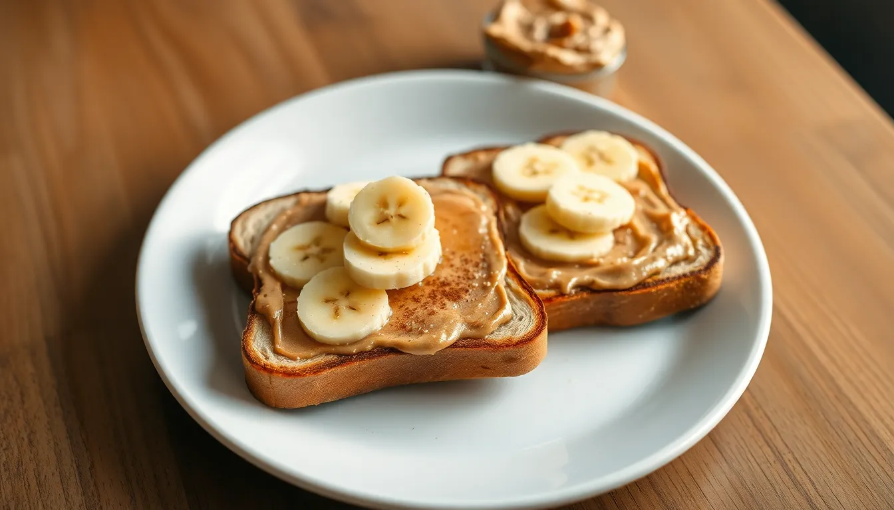

Peanut Butter Banana Toast Plate
Prep time: 5 minutes - Cook time: 5 minutes - Total time: 10 minutes
Estimated total cost: $5.60 - Estimated cost per serving: $1.40 - Serves: 4

Ingredients
- 8 slices bread — $1.60
- 1/2 cup peanut butter — $1.00
- 2 bananas, sliced — $0.70
- 1 tablespoon honey alternative, maple syrup, or cinnamon sugar — $0.20
- Optional: 2 cups prepared oatmeal on the side — $1.50
- Optional: chopped peanuts or raisins — $0.40
Estimated ingredient total: $3.50 to $5.40
Displayed planning estimate: $5.60
Detailed Instructions
- Toast the bread until lightly crisp.
- Spread peanut butter evenly over each slice while the toast is still warm.
- Top with banana slices.
- Sprinkle with cinnamon sugar or drizzle lightly with maple syrup if using.
- Serve two slices per person as a simple meal.
- If you want to make it more filling, serve with a small side of oatmeal.
- Add optional chopped peanuts or raisins if desired.
Helpful Notes
- This is especially useful for cheap breakfasts.
- Whole grain bread makes it feel more substantial.
- It is easy to scale up or down.
Price Note
Ingredient prices can vary by store, brand, and region, so these are planning estimates rather than exact totals.